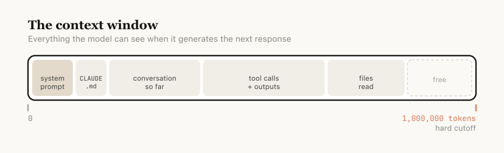
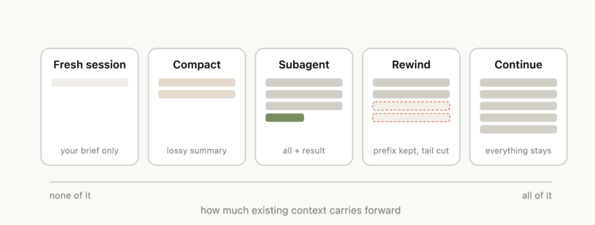
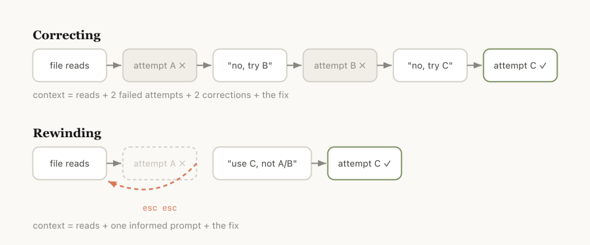
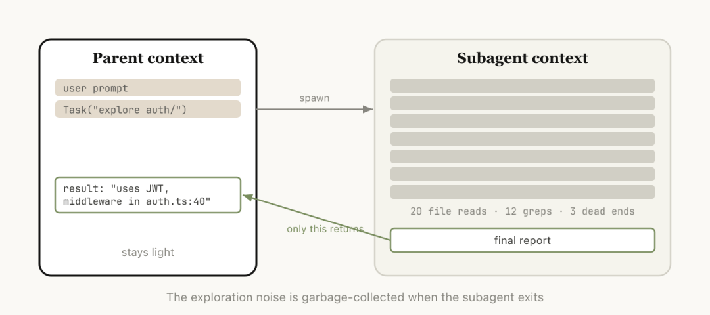
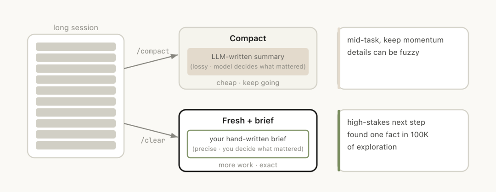

Anthropic 在 2026 年 4 月 15 日发了一篇博客，标题直接：Using Claude Code: session management and 1M context。很多人第一眼会盯着 1M context 看。我读完更在意一件事，Claude Code 团队已经不把上下文管理当成高级技巧了，他们把它做成日常操作。
这篇文章最有意思的地方，在 token 数字之外，在它怎么教用户处理一个会话的生命周期。继续聊、回滚、压缩、清空、开子代理，这些动作表面上是几个命令，背后对应的是五种完全不同的上下文策略。
这篇文章真正讲的是什么
Claude Code 官方文档对上下文窗口的定义很清楚。它装进去的不只是你刚刚发的 prompt，还包括系统提示词、CLAUDE.md、auto memory、读过的文件、命令输出、技能说明，还有 Claude 自己前面的回复。也就是说，1M token 并不等于你能拿来随便塞 1M token 的任务内容，中间有一大块预算本来就被运行环境吃掉了。

博客里还提到一个很关键的词，context rot。上下文越长，模型注意力越分散，旧信息越容易干扰当前判断。这里有个很现实的结论，大窗口当然有用，它能让长任务跑得更稳，但它没有让上下文管理消失。窗口变大之后，管理方式反而更重要了。
所以 Anthropic 给出的建议很实用。当前任务还在延续，就继续同一个 session。任务方向已经变了，就直接开新 session。中途走错路，别急着在错误轨迹上补一句修正，很多时候先 rewind 再重试更干净。会话太长又还想接着做，可以 compact。接下来要产生一堆你以后不会再看的中间输出，就交给 subagent。
1M context 之外，我看到的三个产品信号
第一个信号是，Claude Code 在把会话当成工作单元，不把用户当成工作单元。官方博客里有一句很值得记住：开始一个新任务，通常也该开始一个新 session。这个建议看上去有点反直觉，因为大家天然会觉得上下文越多越省事。可在 agent 场景里，脏上下文带来的副作用很快就会超过复用带来的便利。

第二个信号是，/rewind 的地位被明显抬高了。很多人和 AI 协作时有个习惯，模型走偏了，就顺着当前对话补一句，你别这么做，改成那个做法。博客给出的建议更像版本控制：保留有价值的文件读取，把失败尝试整段剪掉，再从那个分叉点重新走。这个设计很聪明，因为错误轨迹本身也会占上下文，还会持续污染后面的判断。

第三个信号是，subagent 在 Claude Code 里承担的是上下文隔离层，不只是并行工具。官方文档写得很明确，subagent 拿到的是一个全新的上下文窗口，它做完搜索、验证、代码库梳理，只把摘要和结果带回父会话。这个设计的价值，不止是快，还在于它像一次定向垃圾回收，把高噪声探索留在子上下文里。

Claude Code 这套设计，已经有一点操作系统味道了
我看完博客和文档，脑子里冒出来的不是聊天框，反倒更像一套分层记忆系统。
CLAUDE.md 和 auto memory 更接近长期记忆，负责加载稳定约束。当前 session 是工作记忆，负责承接当下任务的状态。/compact 是一次有损压缩，把当前状态压成摘要继续跑。/clear 像主动切进程，你带着自己写的 brief 重新开工。subagent 像隔离出来的临时 worker，干完活就把噪声留在那边。/rewind 则像 checkpoint restore，让你回到污染扩散之前。

这个视角很重要，因为 Anthropic 现在解决的是 agent runtime 的状态管理。很多人聊 AI 编程工具，注意力都放在模型和上下文长度上。Claude Code 这篇文章透露出来的方向更具体：谁能把上下文调度做得更清晰，谁的 agent 体验就更稳。
怎么用这套方法
如果要把这篇文章里的建议压成一套日常用法，一般会这样做。
先用 /context 看当前会话里是谁在占空间，别等自动压缩触发了再想起来清理。遇到一条明显走错的实现路线，我会优先 rewind，把失败分支直接拿掉。一个任务做到一半，发现后面还有连续工作要接，我会手动 compact，顺手加一句提示，把下一阶段的重点写清楚。真到了新任务，我会直接 /clear，自己写一小段 brief，只留下还会继续影响决策的信息。要读另一套代码、扫日志、做验证这类高噪声工作，我会主动要求它开 subagent。
/context
/rewind
/compact focus on the auth refactor, drop the test debugging
/clear这几个命令连起来看，你会发现 Claude Code 卖的是一组可以操控上下文密度的开关。这个思路我很认同。长任务里最稀缺的资源，是干净、可控、还带着重点的工作记忆。
总结
这篇官方博客让我更确定一件事：Agent 工具接下来的竞争点，会越来越落在上下文架构上。大窗口当然重要，但大窗口只是地基。真正决定体验上限的，是系统怎么让你切任务、丢噪音、保留结论、回到分叉点、隔离探索。
Claude Code 这次把这些动作都摆到了台面上，而且讲得足够具体。对普通用户来说，这是一篇使用指南。对做 agent 产品的人来说，这更像一份设计说明书。会话不是聊天记录，它已经是 runtime 的一部分了。
参考资料：
Anthropic Blog: https://claude.com/blog/using-claude-code-session-management-and-1m-context Claude Code Docs: https://code.claude.com/docs/en/how-claude-code-works Claude Code Docs: https://code.claude.com/docs/en/context-window Claude Code Docs: https://code.claude.com/docs/en/sub-agents Claude Code Docs: https://code.claude.com/docs/en/best-practices